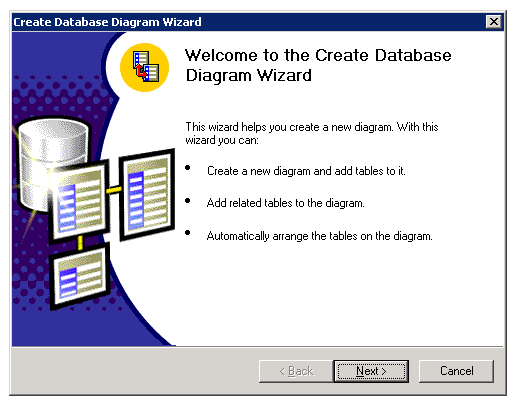

lab1:kiểu dữ liệu cơ bản - tạo Cơ sở dữ liệu- tạo bảng
1. Làm quen với môi trường SQL Server 2000
1. Mở SQL Server 2000 từ Start -> Programs -> Microsoft SQL Server ->
Enterprise Manager:
Để quản lý các cơ sở dữ liệu
Chọn Query Analyzer để viết các câu truy vấn SQL trên cơ sở dữ liệu
2. Mở SQL Server 2000 từ Start -> Programs -> Microsoft SQL Server ->
Query Analyzer:
Để thực hiện truy vấn trên cơ sở dữ liệu
1. các kiểu dữ liệu cơ bản
| Kiểu dữ liệu | Chú thích | Kiểu dữ liệu | Chú thích |
| bit | dữ liệu chỉ có hai giá trị 0, 1 | Char | Kiểu kí tự |
| binary | chuỗi nhị phân | nchar | Kiểu kí tự unicode |
| varbinary | biến chuỗi nhi phân | varchar | biến kí tư |
| tinyint | số nguyên bé (0 -> 255) | nvarchar | biến kí tự unicode |
| smallint | số nguyên nhỏ (-2^15->2^14) | datetime | kiểu ngày giờ (8 byte) |
| Int | số nguyên (-2^31->2^30) | smalldatetime | Kiểu ngày giờ (4 byte) |
| Bigint | số nguyên lớn(-2^63->2^62) | smallmoney | dữ liệu tiền tệ(-2^32 -> 2^32) |
| Decimal | số thập phân(-10^38->10^38) | Money | dữ liệu tiền tệ(-2^64->2^64) |
| Numeric | tương tự kiểu decimal. | image | Kiểu dữ liệu nhị phân(0 -> 2^31) |
| Float | số thực (8 byte) | ||
| Real | số thực (4 byte) | ||
| text | chuỗi kí tự | ||
| Ntext | chuỗi kí tự unicode |
2. Tạo cơ sở dữ liệu trong SQL
Vào Enterprise Management -> (LOCAL)(Windows NT) -> Database -> chuột phải ->New Database...
Ví dụ: tạo cơ sở dữ liệu để quản lý chấm công với tên QuanLyChamCong
3. tạo bảng trong sql
Ví dụ: Để quản lý việc chấm công cho giáo viên giảng dạy, người ta cần lưu trữ những thông tin sau:
- GiaoVien( MaGV, HoGV, TenGV, DiaChi, SoDT)
- MonHoc( MaMH, TenMH, TongSoDK)
- BangChamCong( MaGV, MaMH, SoTiet, Buoi, Ngay)
Diễn giải:
- Thông tin về giáo viên gồm có mã giáo viên( MaGV), mỗi giáo viên có một mã duy nhất để phân biệt với các giáo viên khác, có họ( HoGV), có tên( TenGV), địa chỉ( DiaChi), số điện thoại( SoDT).
- Môn học gồm những thông tin mã môn học( MaMH), tên môn học( TenMH). Mã môn học là duy nhất để phân biệt với môn học khác.
- Tổng số sinh viên đăng kí học( TongSoDK) một môn học sẽ được lưu lại để cho việc tính hệ số lớp đông cho giáo viên..
- Mỗi buổi giáo viên lên lớp giảng dạy sẽ được lưu trong bảng chấm công với thông tin về giáo viên, môn học, số tiết, buổi dạy( sáng/ chiều/ tối) và ngày dạy.
Muốn tạo bảng GiaoVien, vào Database -> StudentManagement -> Tables -> chuột phải -> New Table ..., sau khi tạo bảngxong thì nhấn nút lưu lại, hộp thoại Choose Name cho nhập tên bảng cần lưu.
Chú ý:
- Khi tạo bảng dữ liệu, phải xác định kiểu dữ liệu và kích thước.
- Sự khác biệt giữa char và varchar:
Ví dụ:
Ta có khai báo TenGV char(20): có nghĩa trường dữ liệu tên giáo viên có độ dài 20 kí tự, nếu tên ngắn hơn 20 kí tư, thì kí tự trắng sẽ được tự động chèn vào cho đủ 20 kí tự, còn nếu tên dài hơn 20 kí tự, thì chuỗi sẽ tự động bị cắt bớt chỉ còn 20 kí tự
Còn khi ta khai báo TenGV varchar(20): có nghĩa trường dữ liệu tên giáo viên có độ dài 20 kí tự, nếu tên ngắn hơn 20 kí tư, thì chiều dài chuỗi sẽ đúng bằng chiều dài tên, còn nếu tên dài hơn 20 kí tự, thì chuỗi sẽ tự động bị cắt bớt chỉ còn 20 kí tự
Khi tạo bảng cần phải xác định khóa chính cho bảng. Cách tạo khóa như sau: chon những thuộc tính khóa, sau đó nhấn nút set primary key.
Ví dụ: khóa một thuộc tính.
Ví dụ: khóa nhiều thuộc tính:
4. tạo quan hệ giữa các bảng
1. Vào Database -> Cơ sở dữ liệu -> Diagrams -> chuột phải -> New Database Diagrams

2. Chọn Next -> chọn bảng -> nhấn nút Add -> Next -> Finish.
3. Tạo quan hệ
Chọn bảng cần tạo quan hệ -> chuột phải -> Propeites -> Relationships -> New. Chọn các bảng tương ứng.
Sau khi chọn các bảng để tạo quan hệ, chọn các thuộc tính khóa chính và khóa ngoại tương ứng.
Sau khi tạo xong quan hệ giữa các bảng, nhấn nút lưu, đặt tên cho lược đồ.
5. Bài tập
1. Quản lý đề án của nhân viên như sau:
· Lược đồ NhanVien(HoNV, TenLot, TenNV, MaNV, NgaySinh, DiaChi, Phai, Luong, Ma_NQL, Phong)
· Lược đồ PhongBan(TenPhong, MaPHG, TruongPHG, Ngay_NChuc)
· Lược đồ DiaDiem_PHG(MaPHG, DiaDiem)
· Lược đồ DeAn(TenDA, MaDA, DiaDiem_DA, Phong)
· Lược đồ PhanCong(MaNV, SoDA, ThoiGian)
· Lược đồ ThanNhan(MaNV, TenTN, Phai, NgaySinh, QuanHe)
Trong đó:
· HoNV, TenLot, TenNV, MaNV, NgaySinh, DiaChi, Phai, Luong, Ma_NQL, Phong : họ, tên lót, tên, mã, ngày sinh, địa chỉ, phái, lương, mã người quản lý,phòng của nhân viên.
· TenPhong, MaPHG, TruongPHG, Ngay_NChuc: Tên phòng, mã phòng, mã người trưởng phòng, ngày nhận chức.
· TenDA, MaDA, DiaDiem_DA , SoDA: tên đề án, mã đề án, địa điểm thực hiện đề án, số đề án.
· TenTN, QuanHe:tên thân nhân, mối quan hệ của thân nhân này với nhân viên
· Một phòng có thể nằm ở nhiều địa điểm khác nhau.
· Một nhân viên có thể tham gia làm nhiều đề án khác nhau của nhiều phòng khác nhau.
· Một phòng có thể đưa ra nhiều đề án.
· Một nhân viên có thể không có hoặc có nhiều thân nhân.
Yêu cầu:
Tạo cơ sở dữ liệu có tên DEAN với các bảng dữ liệu như sau:
- Bảng NhanVien
- Bảng PhongBan
- Bảng DiaDiem_PHG
- Bảng DeAn
- Bảng PhanCong
- Bảng ThanNhan
2. Hoạt động thế giới thực của một ngân hàng được mô tả qua những lược đồ quan hệ như sau:
· Lược đồ ChiNhanh(MaNH, MaCN, ThanhPhoCN, TaiSan)
· Lược đồ NganHang(MaNH, TenNH)
· Lược đồ KhachHang(MaKH, TenKH, DiaChi)
· Lược đồ TaiKhoanVay(MaKH, MaCN, SoTKV, SoTienVay)
· Lược đồ TaiKhoanGoi(MaKH, MaCN, SoTKG, SoTienGoi)
Yêu cầu:
Tạo cơ sở dữ liệu NganHang với các bảng dữ liệu như sau:
- Bảng ChiNhanh
- Bảng NganHang
- Bảng KhachHang
- Bảng TaiKhoanVay
- Bảng TaiKhoanGoi
3. Một trung tâm ngoại ngữ muốn tin học hoà công tác quản lý ghi danh và kết quả học tập của học viên, cũng như theo dõi các lớp học đã thiết kế lược đồ cơ sở dữ liệu như sau:
· Lược đồ KhoaHoc(MaKH, TenKH, BD, KT)
· Lược đồ HocVien(MaHV, Ho, Ten, NgaySinh, DiaChi, NgheNghiep)
· Lược đồ GiaoVien(MaGV, HoTen, NgaySinh, DiaChi)
· Lược đồ LopHoc(MaLH, TenLop, MaKH, MaGV, SiSo, LopTRG)
· Lược đồ BienLai(MaKH, MaLH, MaHV, SoBL, Diem, KetQua, XepLoai, TienNop)
4. Yêu cầu chung:
- Tạo cơ sở dữ liệu và tạo bảng lệnh SQL.
- Chú ý đến kiểu dữ liệu, khóa chính, khóa ngoại.
- Tạo các quan hệ giữa các bản.